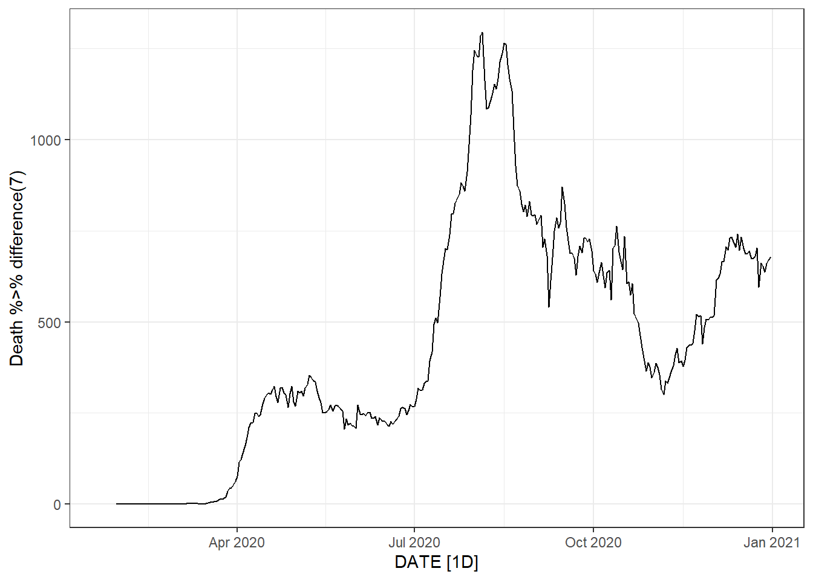
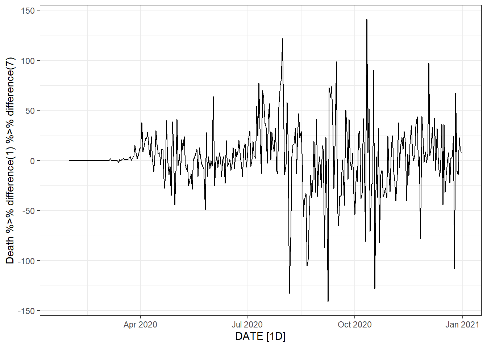
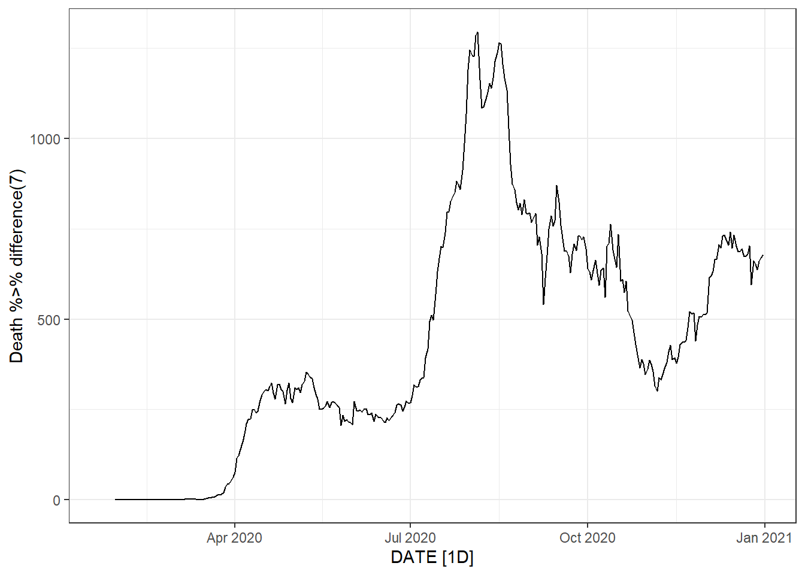
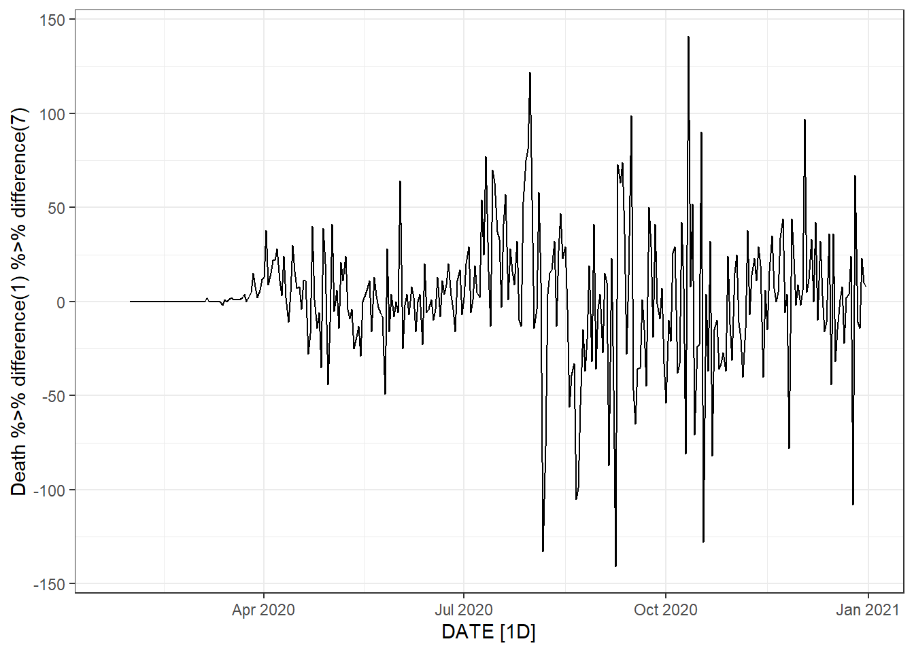

Chapter 9 Time Series Analysis of Infectious Disease Data
## Using `DATE` as index variable.
Figure 9.1: Top left: the time series plot of the daily new deaths in Florida using the autoplot() function. Top right: the time series plot of the daily new deaths in Florida using the ggplot() function. Bottom: the time series plot of the daily new infected and death counts in Florida.
Figure 9.2: The time series plot of the daily new deaths for each of the midwest states. Top: using the ggplot() function. Bottom: using the autoplot() function.
Figure 9.3: The time series plot of the daily new deaths for each week.
Figure 9.4: The lag plot of the daily new deaths for Florida.
Figure 9.5: The ACF plot of the daily new deaths in Florida.
Figure 9.6: Time series plot, ACF plot and PACF plot of lag-7 differenced data.
Figure 9.7: Two weeks ahead forecast of the daily new deaths for Florida. Top: the linear regression method. Bottom: the linear regression method with the seasonal component.
To see what the trend-cycle estimate looks like, we plot the above two moving average trends along with the original data in Figure 9.8.
Figure 9.8: Florida daily new deaths (thin light gray) with the 5-MA (darkgray) and 15-MA (black) smoothing of the trend.
Figure 9.9: Bottom: time series plot of the observed and fitted daily new deaths.
Figure 9.10: Trend of the daily new deaths time series in Florida.
Figure 9.11: The trend, seasonality and residuals of the daily new deaths time series in Florida of fitted STL decomposition.
Figure 9.12: The trend, seasonality and residuals of the daily new deaths time series in Florida based on trend(window = 15) and season(window = 7).
Figure 9.13: Bottom left: seasonal random walk method.
Figure 9.14: Two weeks ahead forecast of the daily new deaths for Florida using four different methods.
Figure 9.15: Residual plot based on the linear regression method with seasonal components.
Figure 9.16: Time plot, ACF plot and histogram of the residuals based on the linear regression method with seasonal components.
Figure 9.17: Time plot, ACF plot and histogram of the residuals based on the extended ETS method with the trend and seasonal components.
Figure 9.18: Two weeks ahead forecast of the daily new deaths in Florida.
 

Figure 9.19: Bottom left: weekly new deaths. Bottom right: weekly change in daily new deaths.
Figure 9.20: A procedure to build ARIMA models.
Figure 9.21: Two weeks ahead forecast of the daily new deaths for Florida using different ARIMA models.
Figure 9.22: Two weeks ahead forecast of the daily new deaths for Florida using ETS and ARIMA models.

Figure 9.23: An illustration of traditional time series validation.

Figure 9.24: An illustration of strech rolling cross-validation for time series.

Figure 9.25: An illustration of slide rolling cross-validation for time series.
Figure 9.26: An illustration of tile rolling cross-validation for time series.
Figure 9.27: One week ahead forecast of the daily new deaths for Florida using ETS and ARIMA models.
Figure 9.28: Two weeks ahead forecast of the daily new deaths for Florida using ETS with/without log transformation.
Figure 9.29: Top: residual plot for the ETS without the log transformation. Bottom: residual plot for the log transformed EST method.
Figure 9.30: Two weeks ahead forecast of the daily new deaths for Florida using ETS, constrained to be within [0,300].
Figure 9.31: Two weeks ahead forecast of the cumulative number of deaths for Florida using ETS.
Figure 9.32: Time series plot of the daily new death count for New Jersey.
Figure 9.33: Boxplots of the daily new death count for New Jersey.
Figure 9.34: A non-seasonal STL decomposition for New Jersey’s daily new infected count.
Figure 9.35: A non-seasonal STL decomposition for New Jersey’s daily new death count.
## Registered S3 method overwritten by 'quantmod':
## method from
## as.zoo.data.frame zooFigure 9.36: Tidyverse anomalies from the daily new deaths in New Jersey.